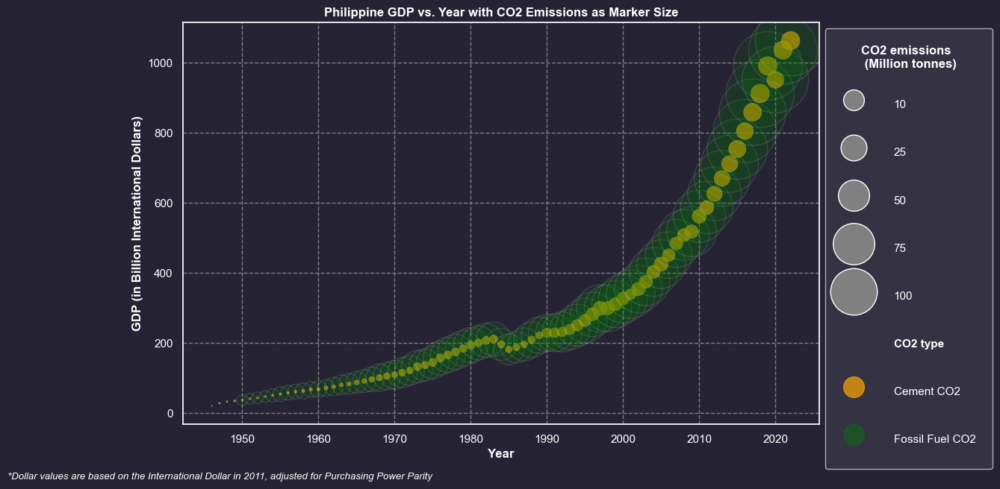

Methodology
Data Preprocessing
The essential data for the project was cleaned, filtered and combined after obtaining them from such data sources. As previously stated, data ranging from 1946-2022 were used given the selected countries. The OWID dataset was highly prioritized for data collection, while The World Bank dataset was generally used to fill out missing data observed from the former. In general, fossil fuel CO2 emissions are the computed sum of gas, coal, and oil sources, seperating them from cement CO2 sources.
For a more detailed procedure with the Preprocessing stage along with the raw data:
Data Visualization
Philippine Nutshell Plot
To aid our initial data exploration, C0DEBABE5 has also created a nutshell plot using the data to visualize the GDP and total CO2 emissions of the Philippines.
It is straightforward to say that with this plot, both GDP and CO2 emissions increase over time, in first impression at least.
Moreover, the team also decided to plot certain relevant graphs per country:
CO2 Emissions over Population
Brazil

Cambodia

China

Indonesia

Malaysia

Mexico

Myanmar

Philippines

South Africa

Sri Lanka

Thailand

United States

Vietnam

CO2 Emissions over GDP
Brazil

Cambodia

China

Indonesia

Malaysia

Mexico

Myanmar

Philippines

South Africa

Sri Lanka

Thailand

United States

Vietnam

Exploratory Data Analysis
Fossil Fuel & Cement CO2 emissions and GDP in the Philippines over time
Permutation-Regression Test for Philippine CO2 emissions and GDP
To further examine the relationship between GDP and CO2 emissions, a Permutation-Regression test was done between the two features. The result for both features yielded a positive relationship between the two (ccement ≈ 0.011; cfossil fuel ≈ 0.133). Such computed coefficients were also found to be statistically significant at a 95% confidence interval, hence leading to the rejection of the first two null hypotheses (p_valuecement ≈ 0.001; p_valuefossil fuel ≈ 0.001).
Philippines vs. Myanmar & Vietnam in Fossil Fuel & Cement CO2 emissions
These graphs compare the Philippines' GDP, cement CO2 emissions, and fossil fuel CO2 emissions to the most similar country in the dataset, Vietnam, and the most different country in the dataset, Myanmar.
Statistical Tests for Regression Coefficients
At a confidence level of 95%, the Philippines' regression coefficient for GDP to cement CO2 is not significantly different from the developing countries' mean with p = 0.08, but its regression coefficient for GDP to fossil fuel CO2 is significantly different from the mean of the developing countries' sampling distribution with p = 2x10(-180).
To read more details and code on visualizing data and statistical testing